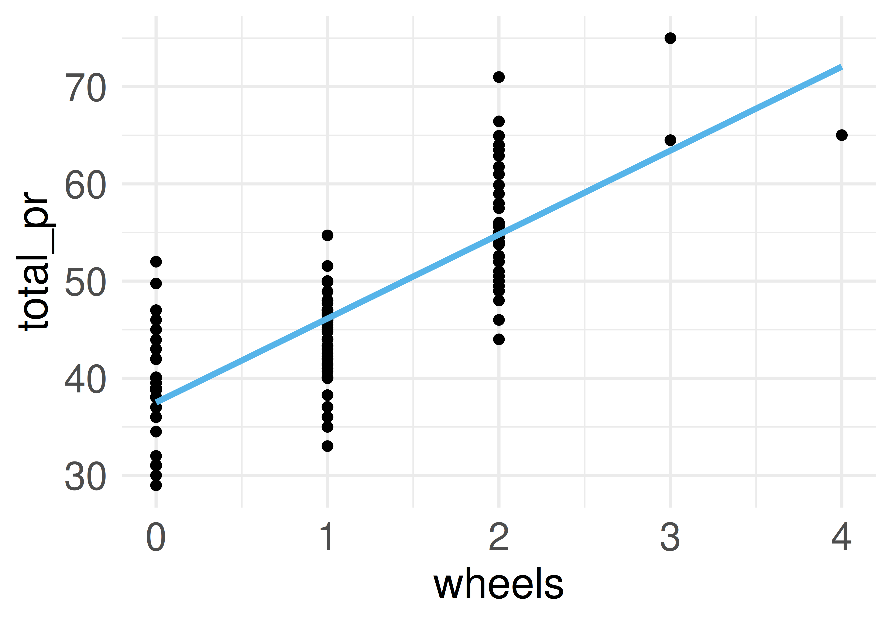
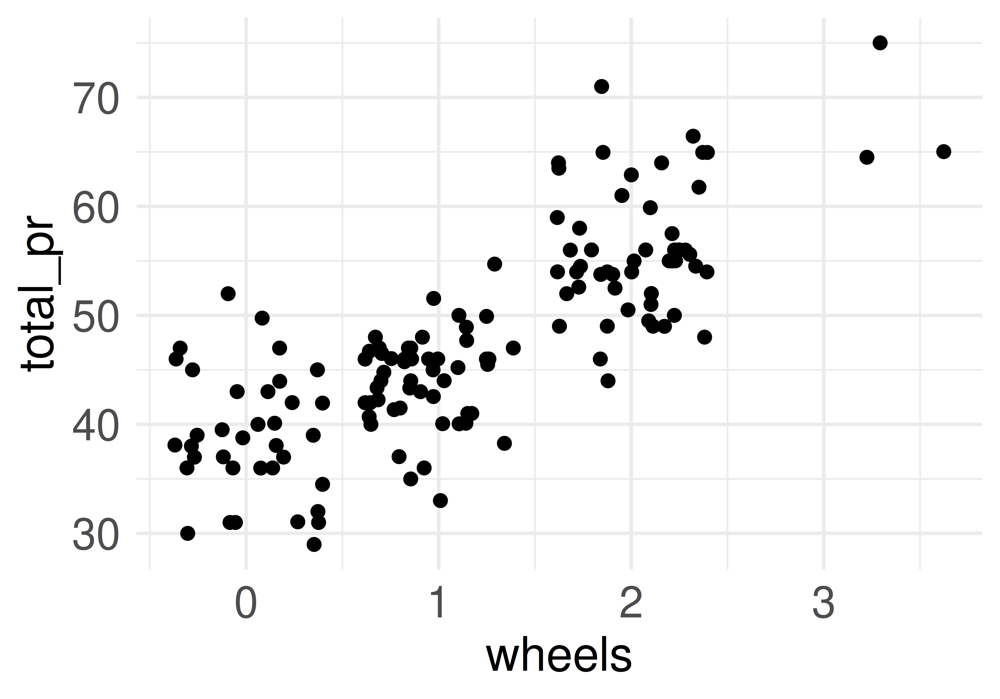
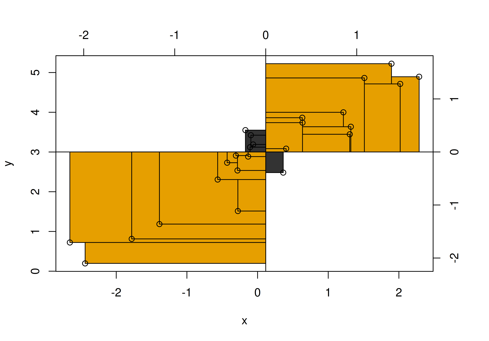
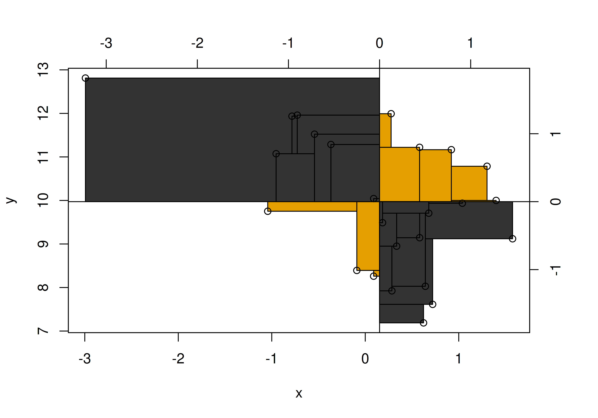
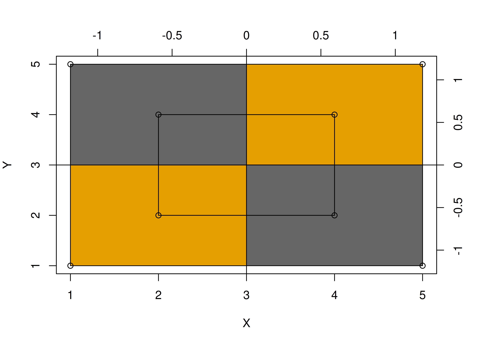
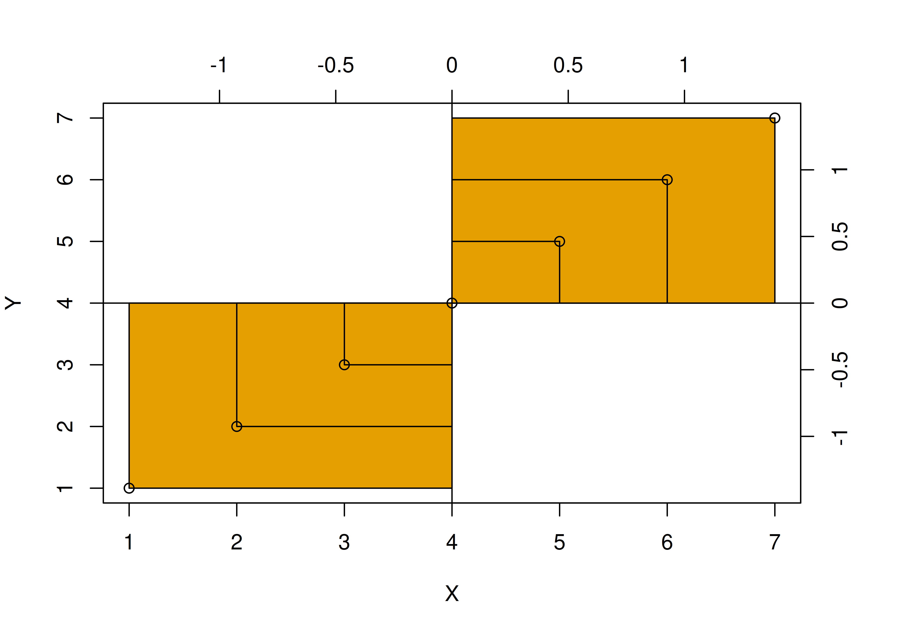
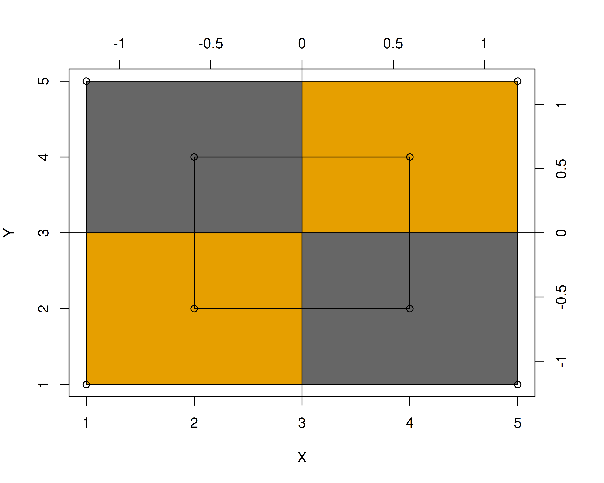
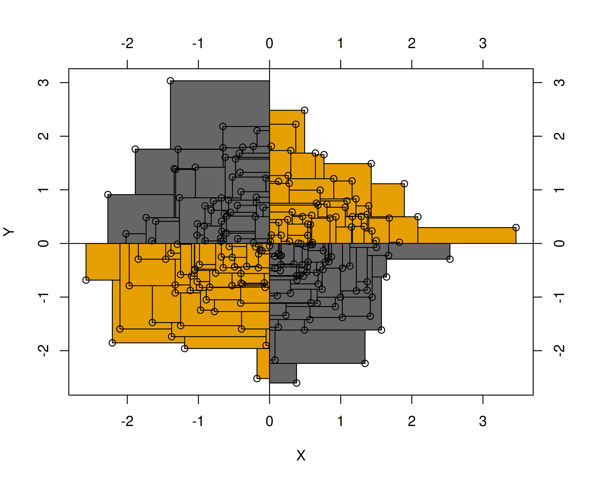
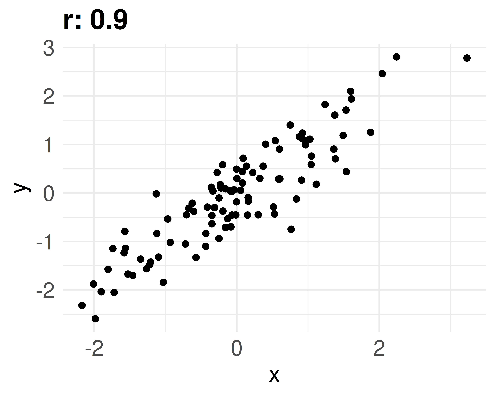
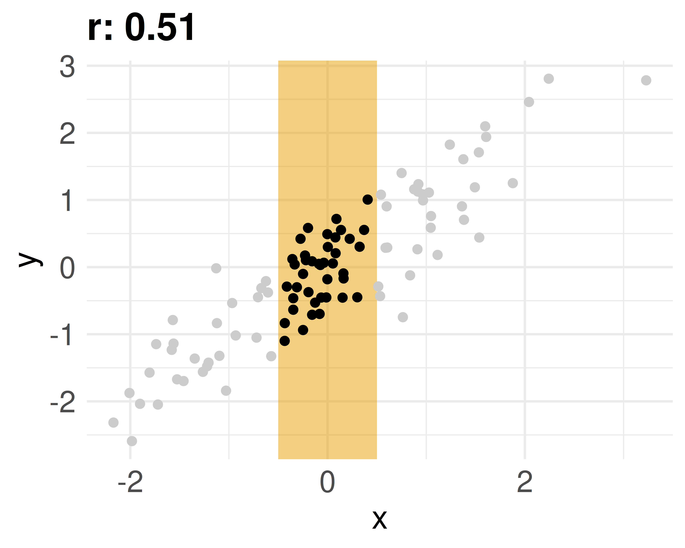

Statistik1
Punktmodelle 2: Zusammenhänge
Einstieg
Lernziele
- Sie können die Begriffe Kovarianz und Korrelation definieren und ihren Zusammenhang erläutern.
- Sie können die Stärke einer Korrelation einschätzen.
Einstieg
Zusammenfassen zum Zusammenhang
Von einer zu zwei Spalten
Bisher haben wir eine Spalte (einen Vektor) zu einer einzelnen Zahl zusammengefasst — einem “Punkt”.
Jetzt fassen wir zwei Spalten zusammen, wieder zu einer Zahl.
{kind=link}
Es geht um die Frage: Wie hängen zwei (metrische) Variablen zusammen?
Zusammenfassen zum Zusammenhang
Beispiel: wheels und total_pr


Zusammenfassen zum Zusammenhang
Abweichungsrechtecke
Beispiel: Noten und Lernzeit
Anton, Bert, Carl und Daniel haben ihre Statistikklausur zurückbekommen. Die Lernzeit \(X\) scheint mit der erreichten Punktzahl \(Y\) (0–100) zusammenzuhängen.
| id | y (Punkte) | x (Lernzeit) |
|---|---|---|
| 1 | 72 | 70 |
| 2 | 44 | 40 |
| 3 | 39 | 35 |
| 4 | 50 | 67 |
Abweichungsrechtecke
Definition: Abweichungsrechteck
Definition: Abweichungsrechteck
Im zweidimensionalen Fall spannt sich ein Abweichungsrechteck vom Mittelwert \(\bar{x}\) bis zum Messwert \(x_i\) und genauso für \(Y\). Mit \(dx_i = x_i - \bar{x}\) (analog \(dy_i\)) ist die Fläche des Abweichungsrechtecks das Produkt der Abweichungen: \(dx_i \cdot dy_i\).
{kind=link}
Abweichungsrechtecke
Vom Rechteck zur Summe
Legt man alle Abweichungsrechtecke zusammen, ergibt sich ein “Summenrechteck”. Je größer seine Fläche, desto stärker der (lineare) Zusammenhang.
Das Vorzeichen der Summe zeigt an, ob der Zusammenhang positiv (gleichsinnig) oder negativ (gegensinnig) ist.


Abweichungsrechtecke
Definition: Kovarianz
Definition: Kovarianz
Die Kovarianz ist definiert als die Fläche des mittleren Abweichungsrechtecks. Sie ist ein Maß für Stärke und Richtung des linearen Zusammenhangs zweier metrischer Variablen.
{kind=link}
Für die Noten und Lernzeit der vier Studierenden beträgt die Kovarianz 162.
Abweichungsrechtecke
Formel der Kovarianz
\[\text{cov}(x,y) = s_{xy} := \frac{1}{n}\sum_{i=1}^n (x_i-\bar{x})(y_i-\bar{y}) = \frac{1}{n}\sum_{i=1}^n dx_i\cdot dy_i\]
In Worten:
- Abweichung jedes \(x_i\) vom Mittelwert \(\bar{x}\) berechnen: \(dx_i\).
- Abweichung jedes \(y_i\) vom Mittelwert \(\bar{y}\) berechnen: \(dy_i\).
- Für alle \(i\) die Abweichungsrechtecke \(dx_i \cdot dy_i\) bilden.
- Flächen der Abweichungsrechtecke addieren.
- Durch die Anzahl der Beobachtungen \(n\) teilen.
Abweichungsrechtecke
Positive und negative Kovarianz
Positive Kovarianz (Beispiele): Größe & Gewicht, Lernzeit & Klausurerfolg, Distanz zum Ziel & Reisezeit, Temperatur & Eisverkauf.
Negative Kovarianz (Beispiele): Lernzeit & Freizeit, Alter & Restlebenszeit, Temperatur & Schneemenge, Lebenszufriedenheit & Depressivität.
Abweichungsrechtecke
Extremwerte der Kovarianz


Abweichungsrechtecke
Wann ist die Kovarianz Null?
Bei einer Kovarianz von (ungefähr) Null ist die Summe der Abweichungsrechtecke pro Quadrant (ungefähr) gleich groß.
\[\begin{aligned} \sum \left(dX \cdot dY \right) &= 0\\ \Leftrightarrow \text{MW} \left(dX \cdot dY \right) &= 0\\ \Leftrightarrow \text{cov}(X, Y) &= 0 \end{aligned}\]


Abweichungsrechtecke
Die Kovarianz ist schwer zu interpretieren
- Sie hängt von der Skalierung ab: Rechnet man z. B. Einkommen von Euro in Cent um, steigt die Kovarianz um den Faktor 100.
- Der Zusammenhang zwischen z. B. Einkommen und Lebenszufriedenheit sollte aber unabhängig von der Maßeinheit sein.
- Sie hat keinen Maximalwert, der einen perfekten Zusammenhang anzeigt.
Fazit: Die Kovarianz ist schwer zu interpretieren und wird in der Praxis wenig verwendet.
Abweichungsrechtecke
Korrelation
Korrelation als mittleres z-Produkt
Der Korrelationskoeffizient \(r\) nach Karl Pearson (1896) löst das Problem der schweren Interpretierbarkeit der Kovarianz.
Wertebereich: \(-1\) (perfekte negative Korrelation) bis \(+1\) (perfekte positive Korrelation). \(r=0\) bedeutet kein linearer Zusammenhang.
So wird \(r\) berechnet:
- Alle \(x_i\) durch ihre Standardabweichung \(s_x\) teilen.
- Alle \(y_i\) durch ihre Standardabweichung \(s_y\) teilen.
- Mit diesen (z-transformierten) Werten die Kovarianz berechnen.
Korrelation
Definition: Korrelationskoeffizient \(r\)
Definition: Korrelationskoeffizient r
Der Korrelationskoeffizient \(r\) (nach Pearson) ist definiert als das mittlere Produkt der z-Wert-Paare (vgl. Cohen et al., 2003). Er misst den linearen Zusammenhang zweier metrischer Variablen; Wertebereich \([-1;1]\), wobei \(0\) keinen linearen Zusammenhang anzeigt und \(|r|=1\) perfekten linearen Zusammenhang.
\[r_{xy}=\frac{1}{n}\sum_{i=1}^n z_{x_i} z_{y_i}\]
Korrelation
Was sagt \(r\) aus?
- Vorzeichen: positiv → gleichsinniger Zusammenhang; negativ → gegensinniger Zusammenhang.
- Absolutwert: gibt die Stärke des linearen Zusammenhangs an — je näher an 1, desto stärker.
Korrelation ist (wie die Kovarianz) nur für metrische Variablen definiert.
Korrelation
Streudiagramme und Korrelationskoeffizient

Untere Zeile: nicht-lineare Zusammenhänge — hier ist \(r=0\), obwohl ein starker nicht-linearer Zusammenhang besteht.
Korrelation
Interpretation der Stärke
Grobe (!) Richtlinien nach Cohen (1988):
| \(|r|\) | Grobe Interpretation |
|---|---|
| 0.01 – 0.09 | sehr schwach |
| 0.10 – 0.29 | schwach |
| 0.30 – 0.49 | mittel |
| ≥ 0.50 | stark |
Korrelation
Korrelation mit R berechnen
| Parameter | n_bids | duration |
|---|---|---|
| total_pr | 0.13 | -0.04 |
| duration | -0.12 |
Korrelation
Korrelation ist nicht Kausation
Eine Studie fand eine starke Korrelation zwischen Schokoladenkonsum und Anzahl der Nobelpreise eines Landes (Messerli, 2012).
{kind=link}
Korrelation ≠ Kausation! Liegt Korrelation ohne Kausation vor, spricht man von Scheinkorrelation.
Korrelation
Scheinkorrelation: Störche und Babys
Ein Mythos besagt: Die Anzahl der Störche pro Landkreis korreliert mit der Anzahl der Babys (vgl. Matthews, 2000).
Mögliche Erklärung: Die “Naturbelassenheit” des Landkreises ist gemeinsame Ursache von Storchenzahl und Geburtenzahl — eine Scheinkorrelation ohne direkte Kausalität.
Korrelation
Glatze macht Corona?
Männer mit Glatze bekommen häufiger einen schweren Corona-Verlauf (Goren et al., 2020).
Alternative Erklärung: Alter wirkt sowohl auf Glatze (ältere Männer häufiger kahl) als auch auf die Schwere des Corona-Verlaufs (ältere Menschen häufiger schwerer betroffen).
Korrelation
Wie man mit Statistik lügt
Einschränkung der Spannweite
Schränkt man den Wertebereich (die Spannweite) einer oder beider Variablen (nicht-randomisiert) ein, sinkt die Stärke (der Absolutwert) einer Korrelation (vgl. Cohen et al., 2003).
Wie man mit Statistik lügt
Effekt der Spannweiten-Einschränkung


Wie man mit Statistik lügt
Fallbeispiel
Verkaufspreis im Mariokart-Datensatz
In Ihrer Arbeit beim Online-Auktionshaus analysieren Sie, welche Variablen mit dem Verkaufspreis von Computerspielen zusammenhängen.
Fallbeispiel
Namensverwechslung: select
Sind mehrere Pakete geladen, die je eine Funktion select enthalten, verwendet R die Funktion aus dem zuletzt geladenen Paket — das kann zu verwirrenden Fehlermeldungen führen.
Abhilfe: Paket explizit angeben, z. B. dplyr::select(...).
Fallbeispiel
Korrelationstabelle (tidy)
| Parameter | wheels | seller_rate | total_pr | ship_pr | start_pr | n_bids |
|---|---|---|---|---|---|---|
| duration | -0.30** | -0.15 | -0.04 | 0.27* | 0.13 | -0.12 |
| n_bids | -0.08 | -0.11 | 0.13 | 0.03 | -0.63*** | |
| total_pr | 0.33** | 0.01 |
Sternchen zeigen die statistische Signifikanz der Korrelation an — ein Thema, das wir hier ignorieren.
Fallbeispiel
Einzelne Korrelation & fehlende Werte
Einen einzelnen Korrelationskoeffizienten erhält man z. B. mit:
Bei fehlenden Werten muss cor ausdrücklich dazu ermutigt werden, trotzdem zu rechnen:
Fallbeispiel
Korrelationen als Heatmap
{kind=link}
Fallbeispiel
Zusammenfassung
- Abweichungsrechteck: Fläche \(dx_i \cdot dy_i\) vom Mittelwert bis zum Messwert
- Kovarianz: mittleres Abweichungsrechteck — misst Stärke & Richtung des linearen Zusammenhangs, aber schwer interpretierbar (skalenabhängig)
- Korrelation \(r\): standardisierte Kovarianz (mittleres z-Produkt), Wertebereich \([-1;1]\)
- Vorzeichen zeigt Richtung, Absolutwert zeigt Stärke des (linearen) Zusammenhangs
- Korrelation ≠ Kausation — Vorsicht vor Scheinkorrelationen
- Einschränkung der Spannweite kann Korrelationen künstlich abschwächen
Literaturhinweise
- Kaplan (2009) — unorthodoxe, geometrische Herangehensweise an Korrelation und Regression
- Poldrack (2023) — modernes, frei online verfügbares Statistikbuch
- Cohen et al. (2003) — Klassiker, etwas höheren Anspruchs
- Pearl & Mackenzie (2018) — Scheinkorrelation vs. “echte” Korrelation, mit Wissenschaftsgeschichte
Referenzen

Statistik1 — Punktmodelle 2: Zusammenhänge